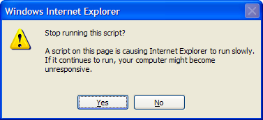

| CanvasGear → Demo1 Demo2 Demo3 Demo4 Demo5 Demo6 |
|
Two screenshots demonstrating finished issue 20140828°0541 'IE8 is drawing outside the canvas'
|
|
|

[image 20140828°1321]
Reminiscence on finished issue 20140828°1151 'IE8 canvas innerHTML unusable'.
With workaound findComments1() or findComments2(),
IE8 shows this dialog then freezes.

[screenshot 20140829°0322]
Reminiscence on finished issue 20140829°0331 'Color and stroke select on canvas'.
Note canvas number two with the yellow stroke.